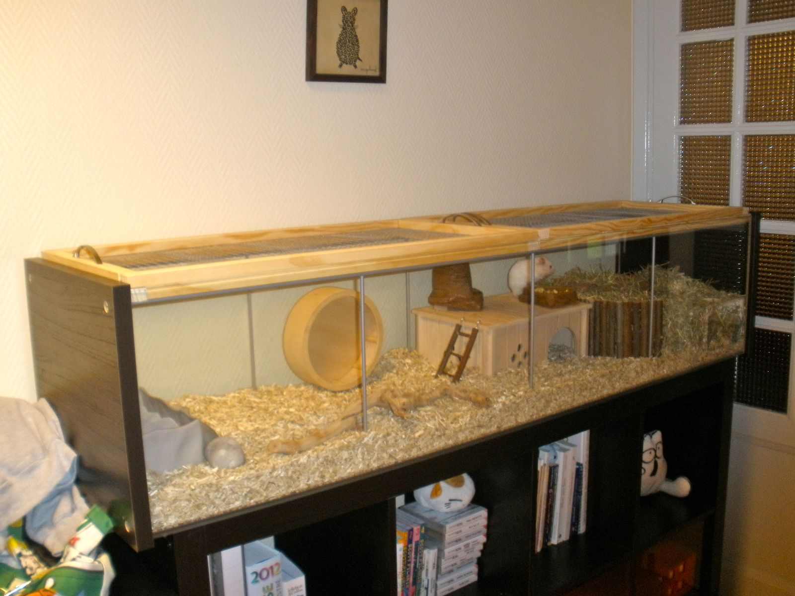
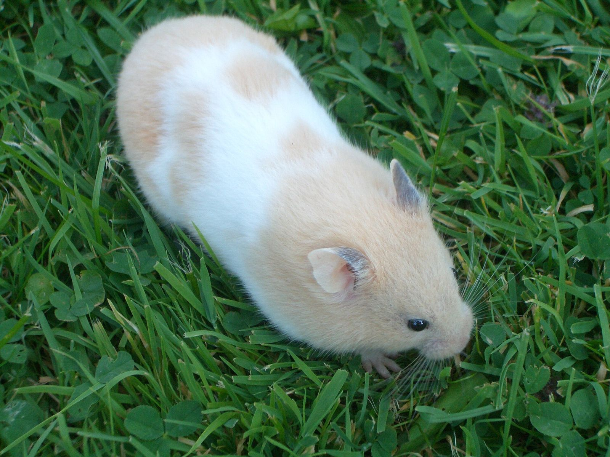
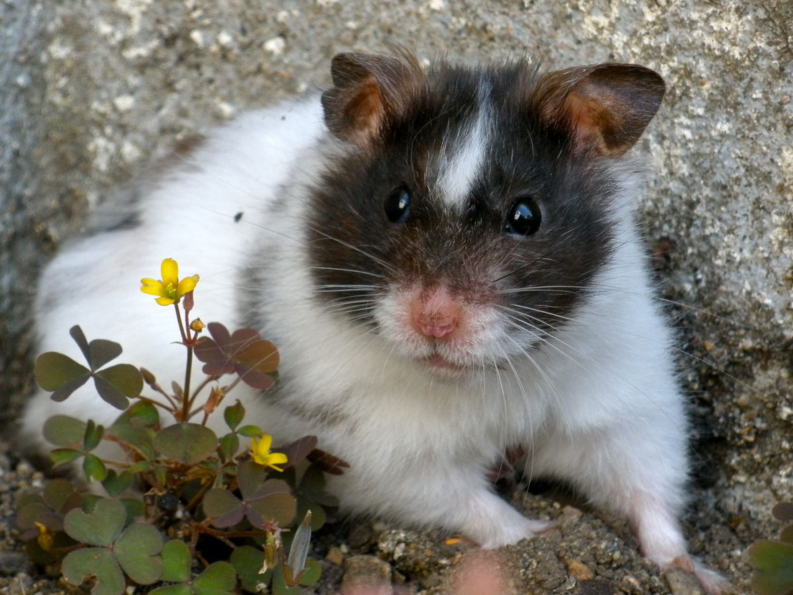
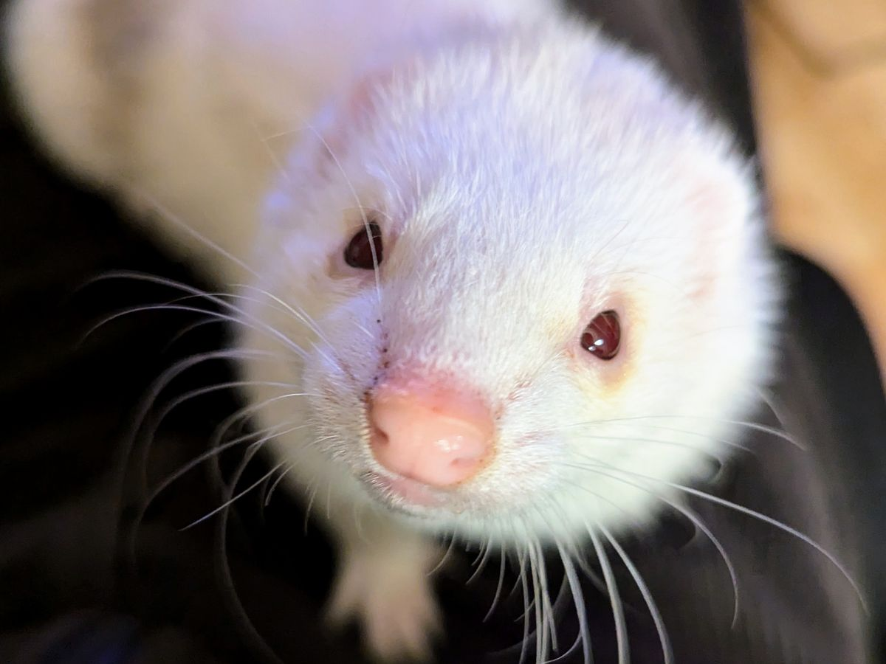
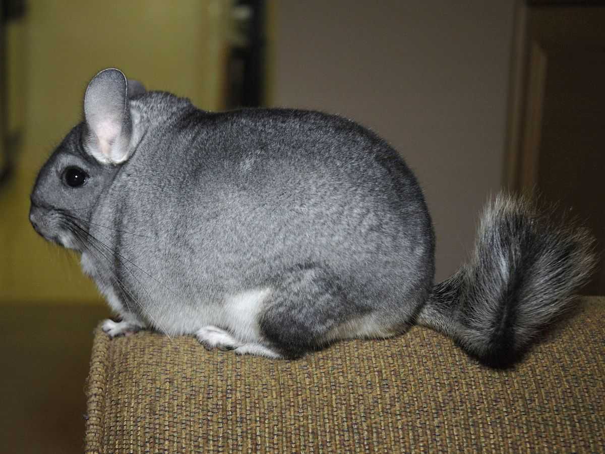
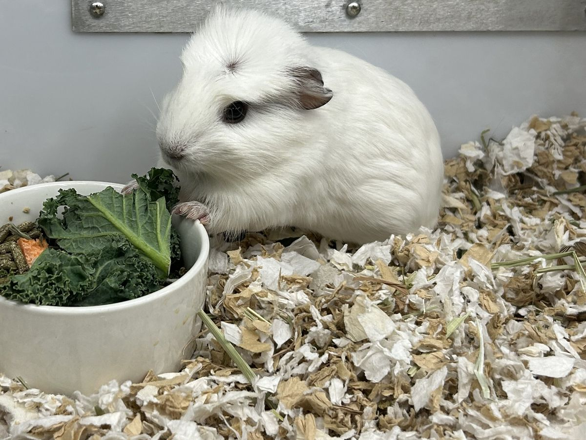
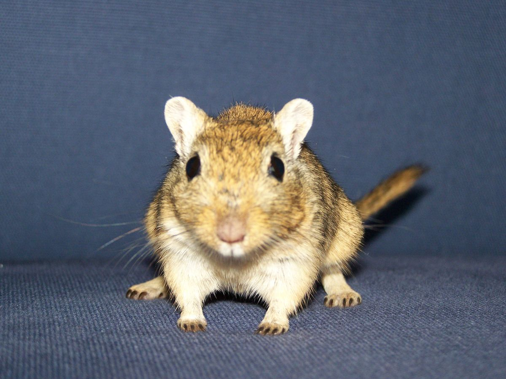
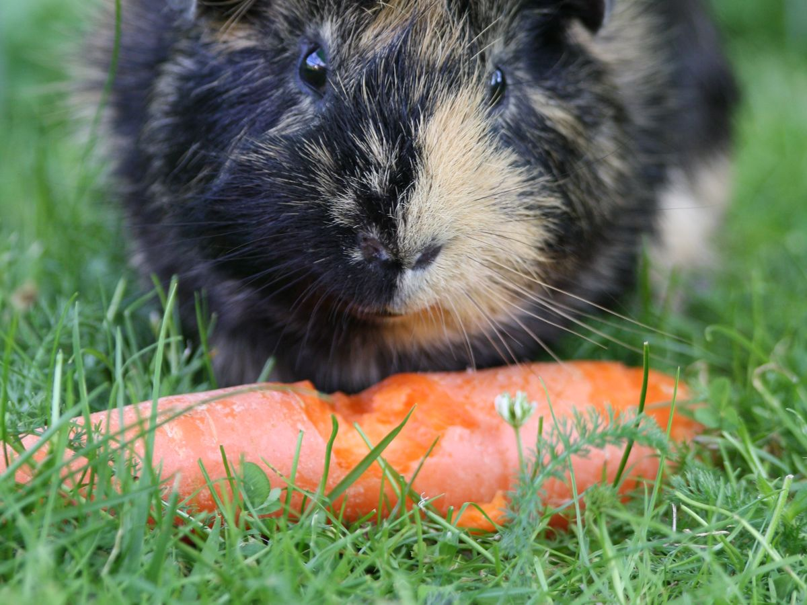
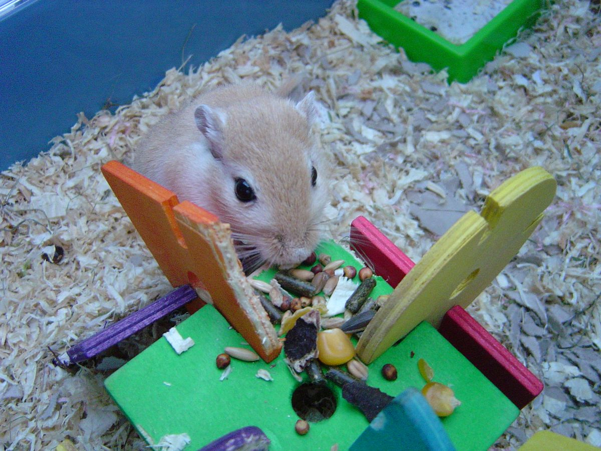

Cuidados
Como preparar um ambiente seguro e confortável
Veja os pontos essenciais para organizar um espaço adequado antes da chegada de um pequeno companheiro.
Pequenos companheiros
Conheça diferentes espécies, características e cuidados para encontrar o pequeno companheiro que combina com você.

Conheça as espécies
Explore características, comportamentos e cuidados para entender qual pequeno companheiro combina melhor com a sua rotina.

Pequenos, curiosos e cheios de personalidade.
Conhecer espécie

Energéticos, inteligentes e exploradores.

Delicadas, ativas e naturalmente curiosas.

Sociáveis, comunicativos e companheiros.

Ágeis, curiosos e muito observadores.
Encontre seu companheiro
Conheça alguns dos pequenos companheiros disponíveis na Ninho.
Os animais e as fotografias desta seção são ilustrativos.
Escolha com responsabilidade
Antes de escolher um companheiro, é importante entender sua rotina, necessidades e características. Uma escolha responsável começa com informação e preparo.
Espaço seguro, confortável e preparado para as necessidades da espécie.
Uma rotina alimentar compatível com a espécie e cada fase da vida.
Estímulos, interação e atividades que favoreçam o bem-estar.
Observação frequente e acesso a orientação profissional quando necessário.
Guias e conteúdo
Conteúdo para ajudar você a conhecer necessidades, comportamentos e cuidados antes e depois da escolha.

Cuidados
Veja os pontos essenciais para organizar um espaço adequado antes da chegada de um pequeno companheiro.

Alimentação
Entenda por que cada espécie possui necessidades próprias e exige uma rotina adequada.

Bem-estar
Descubra a importância de estímulos, atividades e interação para uma rotina mais saudável.